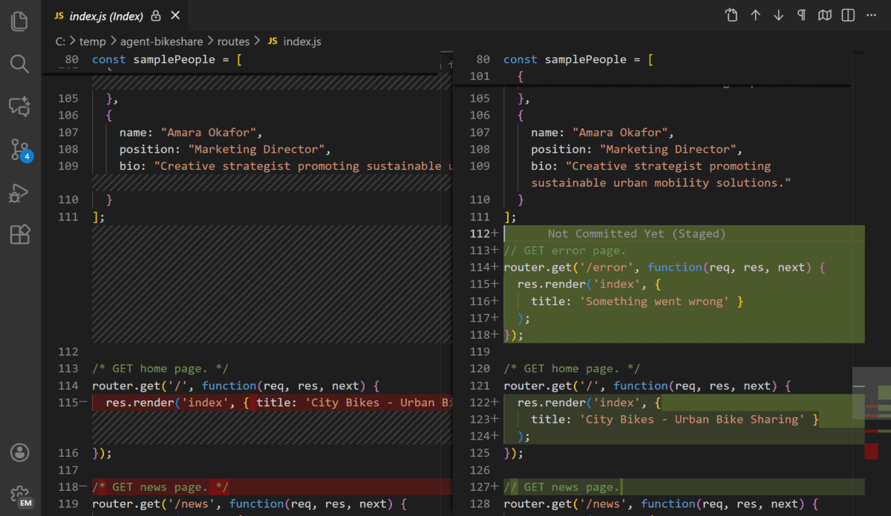
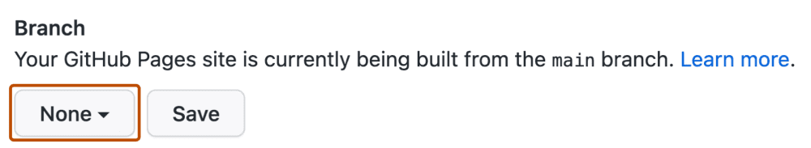

Finished result

The task
Make the lecture materials useful both during the session and afterward. The website holds the definitions, examples, links, and prompts. The slides hold the short version and my speaker cues.
Starting materials
- Lecture notes, an approved outline, and the official session description.
- The Cengage visual template, presenter information, and existing images.
- Saved prompts and project instructions.
- Five Markdown source pages and a shared HTML template.
This walkthrough is a summary of the saved project files. The page-writing prompt below is the original, from when the site had four pages. It names outline files from my working folder that are not in the public repository. The site now has five pages. The other prompts are reusable versions you can run yourself.
Step by step
Turn notes into a page outline
Start with the ideas and teaching sequence. Decide what belongs on each page before asking for finished prose.
View and copy the prompt
Read the lecture outline and session description before writing. Propose an outline for four website pages: Intro, Lecture, Explanation, and Examples. Keep Brain, Workspace, Task, Workflow, and Examples easy for faculty to follow. Identify which ideas belong on the slides and which need a detailed web explanation. Save the page outline as Markdown. Do not generate pages until the outline has been reviewed.Expected output: an outline you can inspect and revise.
Draft the Markdown pages
Give the agent the approved outline, reference files, audience, and boundaries. Ask it to write the source pages in
docs/content/. There were four at the time.View and copy the prompt
Write the four Markdown source files for the CCE 2026 website in `docs/content/`: `intro.md`, `lecture.md`, `explanation.md`, `examples.md`. Primary spec: `presentation/site-outline-claude.md`. Follow its page order, section order, headings, anchors, boxed quotes, visuals, and content rules exactly. Every `####` heading in the outline becomes a section in the corresponding file. Give each H2 in `explanation.md` an explicit id (`brain`, `infrastructure`, `setup`, `task`, `workflow`, `beyond`, `responsible-use`). Before writing, read these files and check whether they contribute anything the outline does not already cover: - `presentation/lecture-outline-detailed.md` - `presentation/lecture-outline-summary.md` - `presentation/plan-gpt.md` - `presentation/official-session-description.md` (read-only; quote, never edit) - `presentation/prompts.md` - `presentation/plan-claude.md` - `presentation/Introduction to agent-first development.html` (third-party VS Code article; use only for the five-pillars mapping and correct Copilot terminology) For each of those files, decide one of three things: 1. Already covered by the outline: use the outline's wording. 2. Adds a useful detail, example, quote, or link that fits under an existing outline section: include it there, and note it in your final report. 3. Adds something that does not fit under Brain, Infrastructure, Task, Workflow, or Examples: leave it out, and list it in your final report so I can decide. Do not add sections the outline does not have. Do not reorder it. Writing rules: - Audience is faculty with no technical background. Every section must read cold. One idea per paragraph. Short sentences. - Where the outline gives a definition or boxed quote, use that wording verbatim; the slides will reuse it. - Where the outline says "visual", write it as a fenced text block for now; the build step will style it later. - Every prompt mentioned on the Examples page appears verbatim in a fenced block so it can be copied. - Use real facts only from the files above. Where the outline leaves a placeholder (short URL, QR image, slides PDF, screenshots, clip slots, the "why agents" sentences in About Me, the model table's "last checked" date), keep a clearly marked TODO rather than inventing content. - The model table in the Brain section: keep the families and the "what differs" list from the outline, omit version numbers, and add a "Last checked: TODO" line. - End each page with a "Next →" link as specified in the outline. - Do not create HTML, CSS, or the build script. Do not edit any file outside `docs/content/`. Do not commit or push. When finished, report: - the four files written and their approximate word counts - which items from the other files were merged in, and where - which items were left out, and why - every TODO placeholder you left, by file and sectionExpected output: readable Markdown with stable headings, links, and complete prompts.
Generate and review HTML
The existing
docs/build.pyscript combines Markdown withdocs/template.htmland shared styling. Runpython docs/build.py, then open the resulting pages. Check the content before judging the visual polish.
Use the diff to see what the agent changed. This screenshot is an illustration. It was not recorded during this build. Click to enlarge. Expected output: linked HTML pages with readable layouts and working images.
Move approved files to GitHub
Review the changed files. Commit the selected website files, then push them to the repository. I keep my working files in Google Drive. GitHub holds the public version and its history.
View and copy the prompt
Review the current website source and git status. Build the website with python docs/build.py and check all local links, images, navigation, phone-width layouts, and the generated pages. Summarize the exact files ready to publish. Preserve unrelated changes. When I explicitly ask you to publish, commit only the approved website files and push them to the configured branch. Confirm the GitHub Pages publishing source, wait for the deployment to finish, then check the live pages. Report the commit and live URL. Do not change repository visibility or include private working files.Publish through GitHub Pages
The existing conference site is served from the repository’s
docs/folder. GitHub Pages publishes that static output. Check the publishing source and the resulting live site after the deployment completes.
Existing project illustration of the Pages publishing settings. Click to enlarge. Expected output: the public website reachable from the link at the top of this page.
Review and revisions
- Does the page sequence follow the lecture?
- Are definitions and examples consistent with the slide outline?
- Do local links and screenshots resolve, including at phone width?
- Did the diff include only the intended changes?
- Does the published page match the approved local output?
Try one small change
Change one welcome sentence. Show the diff and preview. Publishing is a separate step. The finished site is there even if we skip the live edit.
View and copy the prompt
In docs/content/intro.md, change only the sentence marked LIVE BANNER to a short welcome for the CCE 2026 audience. Keep the marker and all links. Rebuild the site with python docs/build.py. Show the diff and a local preview. Do not commit or push. If the build fails, use the prepared screenshot and explain the change.Files and resources
An agent can build the pages. Your outline and your review decide what they say.